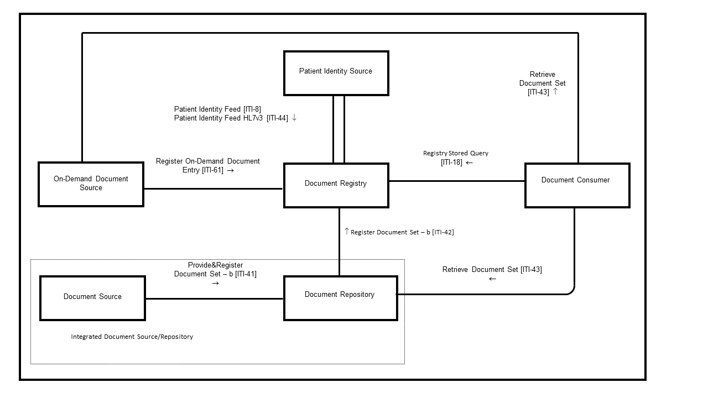
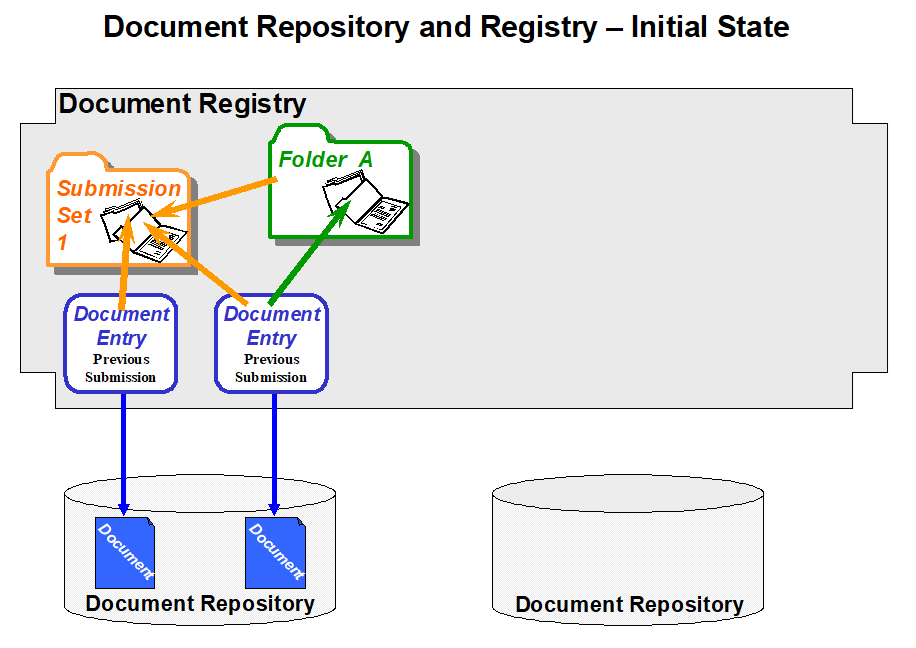

10 Cross-Enterprise Document Sharing (XDS.b)
The Cross-Enterprise Document Sharing (XDS.b) IHE Integration Profile facilitates the registration, distribution and access across health enterprises of patient electronic health records.
Cross-Enterprise Document Sharing is focused on providing a standards-based specification for managing the sharing of documents between any healthcare enterprise, ranging from a private physician office to a clinic to an acute care in-patient facility.
In the rest of the ITI Technical Framework the term XDS refers generically to any flavor of XDS, currently only XDS.b.
The XDS.b Integration Profile assumes that these enterprises belong to one or more XDS Affinity Domains. An XDS Affinity Domain is a group of healthcare enterprises that have agreed to work together using a common set of policies and share a common infrastructure.
Examples of XDS Affinity Domains include:
- Community of Care supported by a regional health information organization in order to serve all patients in a given region.
- Nationwide EHR
- Specialized or Disease-oriented Care
- Cardiology Specialists and an Acute Cardiology Center
- Oncology network
- Diabetes network
- Federation of enterprises
- A regional federation made up of several local hospitals and healthcare providers
- Government sponsored facilities (e.g., VA or Military)
- Insurance Provider Supported Communities
Within an XDS Affinity Domain, certain common policies and business rules must be defined. They include how patients are identified, consent is obtained, and access is controlled, as well as the format, content, structure, organization and representation of clinical information. This Integration Profile does not define specific policies and business rules; however, it has been designed to accommodate a wide range of such policies to facilitate the deployment of standards-based infrastructures for sharing patient clinical documents. This is managed through federated document repositories and a document registry to create a longitudinal record of information about a patient within a given XDS Affinity Domain. These are distinct entities with separate responsibilities:
- A document repository is responsible for storing documents in a transparent, secure, reliable and persistent manner and responding to document retrieval requests.
- A document registry is responsible for storing information about those documents so that the documents of interest for the care of a patient may be easily found, selected and retrieved irrespective of the repository where they are actually stored.
By specifying separate Document Registry and Document Repository Actors, XDS offers additional flexibility of having a single Document Registry index content for multiple Document Repositories. The ebRIM portion of the registry standard supports this possibility though the ExternalIdentifier object type, see ITI TF-3: 4.2.3.1.1 . A Document Repository may hold documents that are not indexed in a Document Registry.
The concept of a document in XDS is not limited to textual information. As XDS is document content neutral, any type of clinical information without regard to content and representation is supported. This makes the XDS IHE Integration Profile equally able to handle documents containing simple text, formatted text (e.g., HL7 CDA Release 1), images (e.g., DICOM) or structured and vocabulary coded clinical information (e.g., CDA Release 2, CCR, CEN ENV 13606, DICOM SR). In order to ensure the necessary interoperability between the document sources and the document consumers, the XDS Affinity Domain must adopt policies concerning document format, structure and content.
The XDS Integration Profile is not intended to address all cross-enterprise EHR communication needs. Some scenarios may require the use of specific XDS options, the use of other IHE Integration profiles, such as Patient Identifier Cross-Referencing, Audit Trail and Node Authentication, Cross-Enterprise User Authentication, and Retrieve Information for Display. Other scenarios may be only partially supported, while still others may require future IHE Integration profiles, which will be defined by IHE as soon as the necessary base standards are available. Specifically:
- The sharing and access to dynamic information such as allergy lists, medication lists, problem lists, etc. is addressed in part by XDS through the aggregation of information across structured documents and in part by the XDS On-Demand Documents Option that provides support for requesting most recent computer assembled content. In addition, other IHE profiles such as Retrieve Information for Display Integration Profile provide complementary means to query a-priori known systems that may provide targeted dynamic information for a patient.
- The placing and tracking of orders (e.g., drug prescriptions, radiology orders, etc.) is not supported by XDS. This does not preclude the use of XDS to store and register orders and corresponding results when such artifacts need to be recorded in the patient’s health record. However, XDS provides no facilities for tracking progress of an order through its workflow, and therefore is not intended for order management. A complementary approach to cross-enterprise order workflow (ePrescription, eReferral) may be expected as separate Integration Profiles in the future.
- The operation of any XDS Affinity Domain will require that a proper security model be put in place. It is expected that a range of security models should be possible. Although the XDS Integration Profile is not intended to include nor require any specific security model, it is expected that XDS implementers will group XDS actors with actors from the IHE Audit Trail and Node Authentication and will need an Access Control capability that operates in such a cross-enterprise environment. Specific IHE Integration Profiles complementary to XDS are available (e.g., Cross-Enterprise User Authentication, Document Digital Signature, etc.).
- The establishment of independent XDS Affinity Domains will call for their federation, as patients expect their records to follow them as they move from region to region, or country to country. IHE foresees a need for transferring information from one XDS Affinity Domain to another, or to allow access from one XDS Affinity Domain to documents managed in other XDS Affinity Domains. XDS has been designed with this extension in mind. The Cross-Community Access (XCA) Integration Profile that complements XDS provides this function.
- XDS does not address transactions for the management or configuration of an XDS Affinity Domain. For example, the configuration of network addresses or the definition of what type of clinical information is to be shared is specifically left up to the policies established by the XDS Affinity Domain.
This Profile has been updated by the XDS Metadata Update Supplement.
10.1 XDS.b Actors/Transactions
This section defines the actors, transactions, and/or content modules in this profile. General definitions of actors are given in the Technical Frameworks General Introduction Appendix A at
Figure 10.1-1 shows the actors directly involved in the XDS.b Profile and the relevant transactions between them. If needed for context, other actors that may be indirectly involved due to their participation in other related profiles are shown in dotted lines. Actors which have a mandatory grouping are shown in conjoined boxes.
Figure 10.1-1b: Cross-Enterprise Document Sharing – b (XDS.b) Diagram
Table 10.1-1 lists the transactions for each actor directly involved in the XDS.b Profile. To claim compliance with this profile, an actor shall support all required transactions (labeled “R”) and may support the optional transactions (labeled “O”).
Table 10.1-1b: XDS.b - Actors and Transactions
| Actors | Transactions | Optionality | Section |
| Document Consumer | Registry Stored Query [ITI-18] | R | ITI TF-2: 3.18 |
| Retrieve Document Set [ITI-43] | R | ITI TF-2: 3.43 | |
| Document Source | Provide and Register Document Set-b [ITI-41] | R | ITI TF-2: 3.41 |
| Document Repository | Provide and Register Document Set-b [ITI-41] | R | ITI TF-2: 3.41 |
| Register Document Set-b [ITI-42] | R | ITI TF-2: 3.42 | |
| Retrieve Document Set [ITI-43] | R | ITI TF-2: 3.43 | |
| Document Registry | Register Document Set-b [ITI-42] | R | ITI TF-2: 3.42 |
| Registry Stored Query [ITI-18] | R | ITI TF-2: 3.18 | |
| Patient Identity Feed [ITI-8] | O (Note 2) | ITI TF-2: 3.8 | |
| Patient Identity Feed HL7v3 [ITI-44] | O (Note 2) | ITI TF-2: 3.44 | |
| Register On-Demand Document Entry [ITI-61] | O | ITI TF-2: 3.61 | |
| Integrated Document Source/Repository | Register Document Set-b [ITI-42] | R | ITI TF-2: 3.42 |
| Retrieve Document Set [ITI-43] | R | ITI TF-2: 3.43 | |
| Patient Identity Source | Patient Identity Feed [ITI-8] | O (Note 1,2) | ITI TF-2: 3.8 |
| Patient Identity Feed HL7v3 [ITI-44] | O (Note 1,2) | ITI TF-2 :3.44 | |
| On-Demand Document Source | Register On-Demand Document Entry [ITI-61] | R | ITI TF-2: 3.61 |
| Retrieve Document Set [ITI-43] | R | ITI TF-2: 3.43 |
Note 1: If Assigning Authority of Patient ID presents in the Patient Identity Feed [ITI-8] or Patient Identity Feed HL7v3 [ITI-44] transaction, the Patient Identity Source is required to use an OID to identify the Assigning Authority. For technical details of the assigning authority information, see ITI TF-2: 3.8.
Note 2: Document Registry and Patient Identify Source shall implement at least one of Patient Identity Feed [ITI-8] or Patient Identity Feed HL7v3 [ITI-44].
10.1.1 Actor Descriptions and Actor Profile Requirements
Most requirements are documented in Transactions (Volume 2). This section documents any additional requirements on this profile’s actors.
10.1.1.1 Document Source
The Document Source is the producer and publisher of documents. It is responsible for sending documents to a Document Repository Actor. It also supplies metadata to the Document Repository for subsequent registration of the documents with the Document Registry Actor.
An implementation of the Document Source shall be able to submit documents. Whether a submission contains a single document or multiple documents depends on workflows, policies, and other external factors which are outside of the scope of this Profile.
10.1.1.2 Document Consumer
The Document Consumer queries a Document Registry for documents meeting certain criteria, and retrieves selected documents from one or more Document Repository Actors.
10.1.1.3 Document Registry
The Document Registry maintains metadata about each registered document in a document entry. This includes a link to the Document in the Repository where it is stored. The Document Registry responds to queries from Document Consumer Actors about documents meeting specific criteria. It also enforces some healthcare specific technical policies at the time of document registration.
10.1.1.4 Document Repository
The Document Repository is responsible for both the persistent storage of these documents as well as for their registration with the appropriate Document Registry. It assigns a uniqueId to documents for subsequent retrieval by a Document Consumer.
10.1.1.5 Patient Identity Source
The Patient Identity Source is a provider of unique identifier for each patient and maintains a collection of identity traits. The Patient Identify Source facilitates the validation of patient identifiers by the Registry in its interactions with other actors.
10.1.1.6 Integrated Document Source/Repository
The Integrated Document Source/Repository combines the functionality of the Document Source and Document Repository Actors into a single actor that does not initiate nor accept the Provide and Register Document Set transaction. This actor may replace the Document Repository from the perspective of the Register Document Set or Retrieve Document transactions.
10.1.1.7 On-Demand Document Source
The On-Demand Document Source supports On-Demand Document Entries by registering this type of entry with the Document Registry and by responding to Retrieve Document Set transactions for those entries with a document reflecting current information for the entry requested.
10.1.2 Transactions
10.1.2.1 Provide and Register Document Set
A Document Source initiates the Provide and Register Document Set Transaction. For each document in the submitted set, the Document Source provides both the documents as an opaque octet stream and the corresponding metadata to the Document Repository. The Document Repository is responsible to persistently store these documents, and to register them in the Document Registry using the Register Documents transaction by forwarding the document metadata received from the Document Source Actor.
In XDS, the documents and metadata go to the Document Repository and then the metadata is forwarded on to the Document Registry Actor. They move in this direction for several reasons:
- It allows best reuse of ebXML Registry specified metadata and web services protocols
- The Document Source only needs to know the identity of the Document Repository. Document Repository knows the identity of the Document Registry. If the Document Source also sent the Provide and Register Document Set-b transaction to the Document Registry, then routing decisions for documents would be more complex.
- The resulting protocols are simpler
- It simplifies the common case where the Document Source and the Document Repository are grouped.
This transaction cannot carry an On-Demand DocumentEntry but can be used to replace an On-Demand DocumentEntry with a Stable DocumentEntry.
10.1.2.2 Register Document Set
A Document Repository initiates the Register Document Set transaction. This transaction allows a Document Repository to register one or more documents with a Document Registry, by supplying metadata about each document to be registered. This document metadata will be used to create an XDS Document Entry in the registry. The Document Registry ensures that document metadata is valid before allowing documents to be registered. If one or more documents fail the metadata validation, the Register Document Set transaction fails as a whole.
To support composite documents, an XDS Document may be a multipart document. The Document Repository must handle multi-part data sets as an “opaque entity”. The Document Repository does not need to analyze or process its multi-part structure nor the content of any parts in the context of the XDS Integration Profile.
This transaction may also include Associations. For example, an Association may be included to replace an On-Demand DocumentEntry with a Stable DocumentEntry.
This transaction cannot carry an On-Demand DocumentEntry but can be used to replace an On-Demand DocumentEntry with a Stable DocumentEntry.
10.1.2.3 Intentionally Left Blank
10.1.2.4 Registry Stored Query
The Registry Stored Query transaction is issued by the Document Consumer on behalf of a care provider (EHR-CR) to a Document Registry. The Document Registry searches the registry to locate documents that meet the provider’s specified query criteria. It will return registry metadata containing a list of document entries found to meet the specified criteria including the locations and identifier of each corresponding document in one or more Document Repositories.
In a Stored Query, the definition of the query is stored on the Registry Actor. To invoke the query, an identifier associated with the query is transmitted along with parameters defined by the query. This has the following benefits:
- Malicious SQL transactions cannot be introduced
- Alternate database styles and schemas can be used to implement the Document Registry Actor. This is because the style of SQL query statements is directly related to the table layout in a relational database.
This profile does not define how Stored Queries are loaded into or implemented in the Document Registry Actor.
10.1.2.5 Intentionally Left Blank
10.1.2.6 Patient Identity Feed
The Patient Identity Feed Transaction conveys the patient identifier and corroborating demographic data, captured when a patient’s identity is established, modified or merged or in cases where the key corroborating demographic data has been modified. Its purpose in the XDS Integration Profile is to populate the registry with patient identifiers that have been registered for the XDS Affinity Domains.
The Patient Identify Feed Transaction defined in ITI TF-2: 3.8 for HL7v2 and in ITI TF-2: 3.44 for HL7v3 uses standard HL7 encoding of Patient Identifiers. This is standard encoding for HL7 applications; receiving applications are expected to extract the required data for their use.
When combined with the other XDS transactions, Document Registry Actors and other actors that receive HL7 data with Patient Identifiers are required to map the data received in the HL7 message to the format specified in those other XDS transactions. In those transactions, the Patient ID is treated using ebXML encoding rules and not HL7 encoding rules. Specifically, the Patient ID will be treated as a string, and extra components entered in that string shall cause those transactions to fail. XDS actors are required to use the specified encoding for Patient ID values in other transactions and not merely copy the value received in an HL7 transaction.
XDS.b implementations shall support either Patient Identity Feed ( ITI TF-2: 3.8 ) or Patient Identity Feed HL7v3 ( ITI TF-2: 3.44 ) or both. It is important to note that the version of HL7 implemented by XDS.b and Patient Identity Feed in a single domain or community need to match in order to allow interoperability. In the case of mixed scenarios, translation between Patient Identity Feed ( ITI TF-2: 3.8 ) and Patient Identity Feed HL7v3 ( ITI TF-2: 3.44 ) will be required via a bridge or interface engine.
10.1.2.7 Retrieve Document Set
A Document Consumer initiates the Retrieve Document Set transaction. The Document Repository or On-Demand Document Source shall return the document set that was specified by the Document Consumer.
10.1.2.8 Register On-Demand Document Entry
The Register On-Demand Document Entry transaction is used by the On-Demand Document Source to register one or more On-Demand Document Entries in the Document Registry.
This transaction may also include Associations. For example, an Association may be included to replace an On-Demand DocumentEntry with a new On-Demand DocumentEntry, replace a Stable DocumentEntry with an On-Demand DocumentEntry, or add an On-Demand DocumentEntry to a Folder.
10.1.3 XDS Document Contents Support
The following table lists a few of the document contents supported in other IHE Integration Profiles, which specify concrete content types for sharing of clinical documents in various domains. These profiles are built on the XDS Profile, and may define additional constraints and semantics for cross-enterprise document sharing in their specific use cases.
Table 10.1-1: List of IHE Integration Profiles and Document Types They Support
| IHE Technical Framework Domain | Integration Profile Name | Document Content Supported |
| IT Infrastructure | An example of an ITI domain content profile defining a document that may be exchanged using XDS is Cross-Enterprise Sharing of Scanned Documents (XDS-SD). Refer to ITI TF-3:5 for other ITI content specifications. | Scanned document, plain text or PDF/A, in HL7 CDA R2 format |
| Patient Care Coordination | An example of a PCC domain content profile defining a document that may be exchanged using XDS is Cross-Enterprise Sharing of Medical Summaries (XDS-MS). Refer to PCC TF-1 for other document content profiles. | Medical Summary in the HL7 CDA format |
| Radiology | Cross-Enterprise Document Sharing for Imaging (XDS-I) | Radiology Diagnostic Report in the plain text or PDF formats |
| Reference to a collection of DICOM SOP Instances in a manifest document in the DICOM Key Object Selection format |
10.1.4 XDS.b Required Actor Groupings
An actor from this profile (Column 1) shall implement all of the required transactions and/or content modules in this profile in addition to all of the requirements for the grouped actor (Column 2).
Table 10.1.4-1: XDS.b - Required Actor Groupings
| XDS.b Actor | Actor(s) to be grouped with | Reference |
| Document Source | CT / Consistent Time | ITI TF-1: 7.1 |
| ATNA / Secure Node or Secure Application | ITI TF-1: 9.1 | |
| Document Repository | CT / Consistent Time | ITI TF-1: 7.1 |
| ATNA / Secure Node or Secure Application | ITI TF-1: 9.1 | |
| Document Registry | CT / Consistent Time | ITI TF-1: 7.1 |
| ATNA / Secure Node or Secure Application | ITI TF-1: 9.1 | |
| Integrated Document Source / Repository | CT / Consistent Time | ITI TF-1: 7.1 |
| ATNA / Secure Node or Secure Application | ITI TF-1: 9.1 | |
| Document Consumer | CT / Consistent Time | ITI TF-1: 7.1 |
| ATNA / Secure Node or Secure Application | ITI TF-1: 9.1 | |
| Patient Identity Source | CT / Consistent Time | ITI TF-1: 7.1 |
| ATNA / Secure Node or Secure Application | ITI TF-1: 9.1 | |
| On-Demand Document Source | CT / Consistent Time | ITI TF-1: 7.1 |
| ATNA / Secure Node or Secure Application | ITI TF-1: 9.1 |
10.2 XDS.b Actor Options
Options that may be selected for each actor in this profile, if any, are listed in Table 10.2-1. Dependencies between options when applicable are specified in notes.
Table 10.2-1b: XDS.b - Actors and Options
| Actor | Options | Vol. & Section |
| Document Source | Document Replacement | ITI TF-1: 10.2.1 |
| Document Addendum | ITI TF-1: 10.2.2 | |
| Document Transformation | ITI TF-1: 10.2.3 | |
| Folder Management | ITI TF-1: 10.2.4 | |
| Basic Patient Privacy Enforcement | ITI TF-1: 10.2.9 | |
| Asynchronous Web Services Exchange | ITI TF-1: 10.2.5 | |
| Document Repository | Asynchronous Web Services Exchange | ITI TF-1: 10.2.5 |
| Document Registry | Patient Identity Feed (Note 1) | ITI TF-2: 3.8 |
| Patient Identity Feed HL7v3 (Note 1) | ITI TF-2: 3.44 | |
| Asynchronous Web Services Exchange | ITI TF-1: 10.2.5 | |
| Reference ID | ITI TF-1: 10.2.6 | |
| On-Demand Documents | ITI TF-1: 10.2.7 | |
| Integrated Document Source / Repository | Document Replacement | ITI TF-1: 10.2.1 |
| Document Addendum | ITI TF-1: 10.2.2 | |
| Document Transformation | ITI TF-1: 10.2.3 | |
| Folder Management | ITI TF-1: 10.2.4 | |
| Basic Patient Privacy Enforcement | ITI TF-1: 10.2.9 | |
| Asynchronous Web Services Exchange | ITI TF-1: 10.2.5 | |
| Delayed Document Assembly | ITI TF-1: 10.2.10 | |
| Document Consumer | Basic Patient Privacy Enforcement | ITI TF-1: 10.2.9 |
| Basic Patient Privacy Proof | ITI TF-2: 3.18.4.1.3.6 | |
| Asynchronous Web Services Exchange | ITI TF-1: 10.2.5 | |
| On-Demand Documents | ITI TF-1: 10.2.7 | |
| Delayed Document Assembly | ITI TF-1: 10.2.10 | |
| Patient Identity Source | Patient Identity Feed (Note 1) | ITI TF-2: 3.8 |
| Patient Identity Feed HL7v3 (Note 1) | ITI TF-2: 3.44 | |
| On-Demand Document Source | Persistence of Retrieved Documents | ITI TF-1: 10.2.8 |
| Basic Patient Privacy Enforcement | ITI TF-1: 10.2.9 | |
| Asynchronous Web Services Exchange | ITI TF-1: 10.2.5 |
Note 1: Document Registry and Patient Identify Source shall implement at least one of Patient Identity Feed or Patient Identity Feed HL7v3.
10.2.1 Document Replacement Option
In this option the Document Source or Integrated Document Source/Repository shall offer the ability to submit a document as a replacement for another document already in the registry/repository.
Note: In order to support document replacement, grouping with the Document Consumer may be necessary in order to Query the Document Registry (e.g., for UUIDs of existing document entries).
10.2.2 Document Addendum Option
In this option the Document Source or Integrated Document Source/Repository shall offer the ability to submit a document as an addendum to another document already in the registry/repository.
Note: In order to support document addendum, grouping with the Document Consumer may be necessary in order to Query the Document Registry (e.g., for UUIDs of existing document entries).
10.2.3 Document Transformation Option
In this option the Document Source or Integrated Document Source/Repository shall offer the ability to submit a document as a transformation of another document already in the registry/repository.
Note: In order to support document transformation, grouping with the Document Consumer may be necessary in order to Query the Document Registry (e.g., for UUIDs of existing document entries).
10.2.4 Folder Management Option
In this option the Document Source offers the ability to perform the following operation:
- Create a folder: The term “folder” comes from the medical community which commonly places patient records in folders for specific purposes. In computer science terminology this concept is most consistent with the UNIX directory format, where a file can be simultaneously within multiple directories.
- Add one or more documents to a folder
Note: In order to support document addition to an existing folder, grouping with the Document Consumer may be necessary in order to Query the registry (e.g., for UUIDs of existing folder).
10.2.5 Asynchronous Web Services Exchange Option (WS-Addressing based)
Asynchronous processing is necessary to support scaling to large numbers of sources and recipients because Asynchronous Web Services Exchange allows for more efficient handling of latency and scale. This WS-Addressing Asynchronous Web Services Exchange stack relies on the Web Service Addressing Stack (see also ITI TF-2: Appendix V.3).
Actors that support this option shall support the following:
- Document Source shall support WS-Addressing based Asynchronous Web Services Exchange for the Provide & Register Document Set – b [ITI-41] transaction
- Document Consumer shall support WS-Addressing based Asynchronous Web Services Exchange for the Registry Stored Query [ITI-18] and Retrieve Document Set [ITI-43] transactions
- Document Repository shall support WS-Addressing based Asynchronous Web Services Exchange for the Provide & Register Document Set – b [ITI-41] and Register Document Set – b [ITI-42], and Retrieve Document Set [ITI-43] transactions
- Document Registry shall support WS-Addressing based Asynchronous Web Services Exchange for the Registry Stored Query [ITI-18] and Register Document Set – b [ITI-42] transactions. If the On-Demand Documents Option is supported, the Document Registry shall also support WS-Addressing based Asynchronous Web Services Exchange for the Register On-Demand Document Entry [ITI-61] transaction
- On-Demand Document Source shall support WS-Addressing based Asynchronous Web Services Exchange for the Register On-Demand Document Entry [ITI-61] and Retrieve Document Set [ITI-43] transactions
Use of Synchronous or Asynchronous Web Services Exchange is dictated by the individual install environment and affinity domain policy.
10.2.6 Reference ID Option
A Document Registry that supports this option shall store the referenceIdList value provided in a Register Document Set-b [ITI-42] transaction and shall implement the FindDocumentsByReferenceId query as specified in ITI TF-2: 3.18.4.1.2.3.7.14 . Document Consumers may use this query to discover documents that have specified values in the document entry metadata referenceIdList.
Document Consumers that use this query will need to be robust to Registries that don’t support the query, for example, falling back to the FindDocuments query and filtering the results locally. The Document Consumers will need to also be robust to missing reference Id values due to Document Source Actors that don’t include the referenceIdList metadata values, or don’t include all the reference identifier values expected; or where other inconsistent results may be returned (e.g., XCA gateways which may have different or changing availability of relevant reference ids).
Document Consumers may fall back to issuing an alternative query, such as FindDocuments, and filtering locally, if the availability or comprehensiveness of a FindDocumentsByReferenceId result is not assured. For example, if an Affinity Domain cannot guarantee that a FindDocumentsByReferenceId result of a single Document Entry matching an order id is in fact the only Document Entry in the registry for that order id (as opposed to the only Document Entry with that order id in its referenceIdList), then a Document Consumer might issue FindDocuments queries instead.
10.2.7 On-Demand Documents Option
The XDS Integration Profile offers a basic service where any document consumer may discover and retrieve any of the documents for a specific patient that document sources have chosen to make available. Time of release and attestation of content are under the full control/responsibility of the document source. The On-Demand Documents Option offers a complementary service for document consumers to discover one or more document sources that have the capability to produce, for a specific patient, an on-demand document with content assembled at the time of processing the document consumer retrieve request.
A Document Consumer declares the On-Demand Documents Option when it is able to specify in a query a request for On-Demand Document Entries and is capable of retrieving such entries.
A Document Registry declares the On-Demand Documents Option when it:
- supports registration of On-Demand Document Entries via a Register On-Demand Document Entry Transaction
- is also able to respond to Registry Stored Query requests which request On-Demand Document Entries
- stores IsSnapShotOf associations received on a Register Document Set-b transaction
10.2.8 Persistence of Retrieved Documents Option
An On-Demand Document Source which supports the Persistence of Retrieved Documents Option shall be grouped with either a Document Source or an Integrated Document Source/Repository in order to register in the Document Registry a new Stable Document Entry which represents each document created as a result of receipt of a Retrieve Document Set which specified the uniqueID of an On-Demand Document Entry. This grouped Document Source or Integrated Source/Repository shall include in the registration an association indicating that the Document Entry begin registered is a snapshot of the On-Demand Document Entry.
10.2.9 Basic Patient Privacy Enforcement Option
An actor that is claiming the Basic Patient Privacy Enforcement Option will enforce Basic Patient Privacy Policies as identified using the Basic Patient Privacy Consent Profile. The enforcement of Basic Patient Privacy utilizes the DocumentEntry metadata that is relevant to security, see ITI TF-3:4.1.3 “The Purpose of Metadata Attributes”.
- Actors shall be able to be configured with the Patient Privacy Policies, Patient Privacy Policy Identifiers (OIDs) and associated information necessary to understand and enforce the XDS Affinity Domain Policy. The details of this are product specific and not specified by IHE.
- Actors shall, as appropriate, enforce XDS Affinity Domain privacy policies. Policies often depend on the relevant documents' metadata and Basic Patient Privacy Documents.
- Document Consumer Actors shall have user access controls or business rule capabilities to determine how to apply the policies to query results. The Document Consumer shall reduce the query results to only those that are appropriate to the current situation. The details of this are product specific and not specified by IHE.
- Document Consumer Actors shall implement the requirements defined in ITI TF-2: 3.18.4.1.3.5
- Actors that create metadata may have user interface or business rule capabilities to determine the appropriate confidentiality codes for each document, see ITI TF-3: 4.2.3.2.5 . For example, when publishing a document, the Document Source might show a list of checkboxes where a user can select which of the available confidentiality codes a document is to be published with. The details of this are product specific and not specified by IHE. However, the information about how confidentiality codes are assigned should be part of the published policy for the XDS Affinity Domain.
10.2.10 Delayed Document Assembly Option
A Document Consumer declares the Delayed Document Assembly Option when it is able to understand that some documents included in the response to a Registry Stored Query will have a size of 0 (zero) and hash = (SHA1 hash of a zero length file). Once the document is retrieved those attributes will be updated to the correct values.
An Integrated Document Source/Repository declares the Delayed Document Assembly Option if it is able to:
- Register Stable Document Entries [ITI-42] with size =
0(zero) and hash = (SHA1 hash of a zero length file) to represent a stable document whose content has not yet been assembled - Assemble the Document Content upon receipt of a Retrieve Document Set [ITI-43] transaction.
- Update the size and hash values by grouping with an XDS.b Document Administrator Actor in order to update the document entry using the Update Document Set [ITI-57] transaction
See ITI TF-2:3.42.4.1.2.1 and ITI TF-2:3.43.4.1.3.2
In order for an Integrated Document Source/Repository to support the Delayed Document Assembly Option it must interact with a Document Registry supporting the Document Metadata Update Option.
10.3 Integration Profile Process Flow
A typical patient goes through a sequence of encounters in different care settings. In each care setting, the resulting patient information is created and managed by multiple care delivery information systems (EHR-CRs). Through a sequence of care delivery activities, a number of clinical documents are created. The EHR-LR provides the means to share the relevant subset of these documents, as they are contributed by the various EHR-CRs that are part of the same XDS Affinity Domain.
Example: Cardiac Patient Management Scenario
Figure 10.3-1: Cardiac Patient Management Scenario Transaction Process Flow
This scenario spans about 3 weeks of a patient’s cardiac episode. The patient presents to her primary care provider (PCP) with complaints of shortness of breath, nausea, tiredness and chest pains. This doctor works closely with a local hospital that has recently established a cardiac care network that allows PCPs, cardiologists, laboratories and two local hospitals to share clinical documents to improve patient care. This cardiac network is part of a local care data exchange community that has been set-up in this community and to which the care plan to which this patient belong has encouraged patients to subscribe. Our patient has been provided a health record account number.
- During the patient examination, the PCP records the complaint, and determines that he should perform an ECG. He queries the cardiac care network to see if there are prior ECG reports (step 1 in Figure 10.3-2), using a coded document class “report” and a coded practice setting “cardiology” established by the cardiac care network for ECG reports. Among the matching Documents, he locates a prior ECG report that is then retrieved (step 2 in Figure 10.3-2). He compares the two results and determines that the patient should be referred to a cardiologist. He searches for additional reports in the cardiac care network (step 3 in Figure 10.3-2) for this patient, but finds none.
Using the ambulatory EHR system, he creates a submission request onto the patients’ health record account number for a “PCP office visit” that includes a submission set consisting of three new documents (visit note, referral letter, new ECG report) and of one reference to the prior ECG report (step 4 in Figure 10.3-2). Following the Cardiology Network XDS Affinity Domain policy, he creates a “cardiac assessment” Folder to contain all four documents in order to facilitate collaboration with the cardiologist.
The repository used by the ambulatory EHR system will then register the documents that are part of this submission request (step 5 in Figure 10.3-2).
Figure 10.3-2: PCP Query Transactions Process Flow
The PCP EHR system implements the Document Consumer and Document Source Actors to issue the Query, Retrieve and Provide & Register transactions as shown in Figure 10.3-2. The transactions are processed by the Document Repository and the Document Registry provided by the cardiology care network.
- The patient appointment with the cardiologist is scheduled. The patient goes to the lab for the lab tests required before appointment. The lab creates a submission set with a clinical code of “laboratory tests” containing the lab results. The lab is not aware of the “cardiology assessment” folder.
- The cardiologist sees the patient. He queries the repository for any patient’s records in a “cardiac assessment” folder (step 1 in Figure 10.3-3). Available are the visit note from the PCP, the ECG and prior ECG, and the referral letter, which he retrieves and reviews (steps 2-5 in Figure 10.3-3). He also queries for recent lab reports, and finds the lab results (step 6 in Figure 10.3-3). This is also retrieved and reviewed (step 7 in Figure 10.3-3).
- The cardiologist performs an ultrasound, dictates a visit note, and orders a nuclear stress test. The visit note and ultrasound images and report are registered as a “cardiologist office visit” submission set and placed in the “cardiac assessment” Folder. In addition, the lab report is added to the “cardiac assessment” Folder (step 8 in Figure 10.3-3).
Figure 10.3-3: PCP Query Transactions Process Flow
- The patient is seen at a radiology facility for the nuclear stress test. The test is performed, and the radiologist dictates the report. The nuclear stress test report is registered in a “radiology examination” submission set and associated with the “cardiac assessment” Folder
- Although she has a scheduled appointment with her cardiologist in two days, she wakes up with severe chest pain. On the way to work, she decides to go to the emergency room (ER) of her local hospital. The ER doctor uses the hospital EHR system to query the cardiac care network registry and repositories for documents related to the patient in reverse chronological order (step 1 in Figure 10.3-4). Available documents from latest cardiology related Folder are the visit notes from the PCP and cardiologist, the recent and prior ECGs, the lab results, and the ultrasound images and report, and the nuclear stress test images and report.
The ER doctor retrieves and reviews the two most relevant reports (step 2 and 3 in Figure 10.3-4).
The ER doctor orders lab tests, ECG, and places the patient under monitoring. The lab tests and ECG are placed in the hospital EHR that acts as a Document Repository for the cardiac network. Abnormal cardiac activity requires a catheterization, diagnostics and possibly intervention. The ER doctor admits the patient to the cardiology service and contacts the cardiologist.
Figure 10.3-4: ER Query Transactions Process Flow
- While talking to the ER physician, the cardiologist accesses the cardiac care network from his home office. He queries for all documents related to the patient since the last visit in his office. The nuclear stress test report that he did not previously review is available, along with lab results and ECG results from the ER. The two physicians determine a plan of care and the cardiologist makes arrangements to see the patient in the hospital.
- As the patient is transferred from the ER, the ER visit notes are submitted as an “emergency department visit” submission set and placed in a newly created “cardiology treatment” Folder along with the earlier lab and ECG results.
- The patient is transferred to an inpatient bed with the following sequence of events.
- The patient is scheduled for a catheterization procedure in cath lab.
- Additional lab tests are ordered and performed.
- A diagnostics procedure is performed in cath lab.
- An intervention with the placement of a stent is performed.
- A cath intervention report is dictated.
- Patient is returned to monitored care for recovery.
- Education given to patient and family.
- Discharge Summary dictated by cardiologist.
- Cardiologist orders lab tests to be completed prior to scheduled follow-up visit.
The admission assessment, lab results, cath intervention report and key images, and discharge summary form a “cardiology intervention” submission set, which is registered with the cardiac care network registry in the “cardiac treatment” Folder started by the ER.
- The patient returns to the cardiologist for the post discharge follow-up visit. The resulting visit note, cardiac rehab and summary letters are placed in a “cardiology office visit” submission set and in the “cardiac treatment” Folder.
- The patient goes to rehab sessions as scheduled by the cardiologist. The patient recovers and is seen by the PCP and cardiologist for routine visits.
10.4 General Principles
10.4.1 EDR-CR Concept
An EHR-CR or Care-delivery Record abstracts the information system or systems of a care delivery organization, which may support a broad variety of healthcare facilities: private practice, nursing home, ambulatory clinic, acute care in-patient facility, etc.
Typically, a patient goes through a sequence of encounters in different care settings as depicted in the figure below.
Figure 10.4.1-1: Sequence of encounters across care delivery organizations
It is out of the scope of this IHE Integration Profile to define or restrict the type of care provided, nor the internal workflow of a care delivery organization. The EHR-CR system participates only to the cross-enterprise clinical document sharing as Document Source and Document Consumer Actors according to the following principles:
- EHR-CR as Document Source contributes documents in any one of the document formats that are supported by the XDS Affinity Domain (e.g., CDA Release 1, CDA Release 2 with specific templates, DICOM Composite SOP Classes, ASTM-CCR, CEN ENV 13606 etc.).
- This Profile does not require that the EHR-CR as Document Sources and Consumers store and manage their internal information in the form of documents as they are shared throughout the XDS Affinity Domain.
- By grouping a Document Source with a Document Repository, an EHR-CR may leverage existing storage to provide a unified access mechanism without needing to duplicate storage.
- EHR-CRs as Document Sources and Consumers are responsible to map their local codes into the XDS Affinity Domain codes if necessary.
The XDS Documents shared by the EHR-CR and tracked by the XDS Document Registry form a Longitudinal Record for the patients that received care among the EHR-CRs of the XDS Affinity Domain.
Figure 10.4.1-2: Contributing and sharing to a patients’ longitudinal health record
This shared clinical record is called an EHR-LR in this Integration Profile.
10.4.2 XDS Document Concept
An XDS Document is the smallest unit of information that may be provided to a Document Repository and be registered as an entry in the Document Registry Actor.
An XDS Document is a composition of clinical information that contains observations and services for the purpose of exchange with the following characteristics: Persistence, Stewardship, Potential for Authentication, and Wholeness. These characteristics are defined in the HL7 Clinical Document Architecture specification. An XDS Document may be human readable (with the appropriate application). In any case, it should comply with a published standard defining its structure, content and encoding. IHE intends to define content-oriented Integration Profiles relying on such content standards to be used in conjunction with XDS.
The XDS Integration Profile manages XDS Documents as a single unit of information; it does not provide mechanisms to access portions of an XDS Document. Only the Document Sources or Document Consumers have access to the internal information of the XDS Document. When submitted for sharing, an XDS Document is provided to the Document Repository as an octet stream. When retrieved through the Retrieve Document Set transaction, it shall be unchanged from the octet stream that was submitted.
The Document Source is responsible for producing the metadata that will be submitted to the Document Registry to form the XDS Document Entry that will be used for query purposes by XDS Consumer Actors. The Document Source maintains responsibilities over the XDS Documents it has registered. It shall replace XDS Documents that may have been submitted in error. See ITI TF-1: Appendix K for a more detailed discussion of the concept of XDS Document.
XDS Documents are required to be globally uniquely identified. See ITI TF-2: Appendix B for a definition of globally unique identifiers.
10.4.3 Submission Request
An XDS Submission Request is a means to share XDS Documents. It may be conveyed:
- by a Document Source in a Provide and Register Document Set-b [ITI-41] transaction to the Document Repository Actor, or
- by a Document Repository in a Register Document Set [ITI-42] transaction to the Document Registry Actor
An XDS Submission Request contains elements of information that will ensure the proper registration of XDS Documents. These are:
- Metadata to be placed in Document Entries for new XDS Documents being submitted,
- A Submission Set that includes the list of all new XDS Documents and Folders being submitted and optionally a list of previously submitted XDS Documents,
- If desired, Folders to be created with the list of included XDS Documents (new document being submitted as well as previously submitted),
- If desired, addition to previously created Folders of lists of XDS Documents (new document being submitted as well as previously submitted), and
- Zero or more XDS Document octet streams for the new XDS Documents being submitted.
Following a successful Submission Request, new XDS Documents, Submission Set, and Folders included in the Submission Request are available for sharing in an XDS Affinity Domain. In case of failure to process a Submission Request, the Submission Set and any XDS Documents and Folders shall not be registered.
10.4.4 Submission Set Concept
An XDS Submission Set is related to care event(s) of a single patient provided by the care delivery organization EHR-CR performing the submission request. It creates a permanent record of new XDS Documents as well as pre-existing (i.e., already registered) XDS Documents that have a relationship with the same care event(s). It also includes the record of new XDS Folders creation.
An XDS Submission Set shall be created for each submission request. It is related to a single Document Source and is conveyed by a single Provide & Register Document Set Transaction or a Register Document Set Transaction.
The Document Registry may be queried to find all documents registered in the same XDS Submission Set.
The same XDS Document, initially registered as part of a Submission Set, may also be referenced by later XDS Submission Set. This allows older documents relevant to the present care of a patient to be associated with more recent Submission Sets.
XDS provides complete flexibility to EHR-CRs to relate Documents and Submission Sets to an encounter, a visit, an episode of care, or various workflow processes within EHR-CRs.
10.4.5 Concept of Folder
The purpose of an XDS Folder is to provide a collaborative mechanism for several XDS Document Sources to group XDS Documents for a variety of reasons (e.g., a period of care, a problem, immunizations, etc.) and to offer the Document Consumers a means to find all Document Entries placed in the same Folder. The following principles apply to an XDS Folder:
- A Folder groups a set of XDS Documents related to the care of a single patient,
- One or more Document Source Actors may submit documents in a given Folder,
- A Folder may be created by a Document Source,
- The content of a Folder is qualified by a list of codes/meaning,
- Document Source Actors may find existing Folders by querying the Document Registry or by means outside the scope of XDS (e.g., Cross-enterprise workflow, such ePrescription, eReferral, etc.),
- Once created a Folder is permanently known by the Document Registry,
- Placing previously existing Documents in Folders is recorded by the updating Submission Set,
- Folders in XDS may not be nested,
- The same documents can appear in more than one Folder, and
- Folders have a globally unique identifier.
10.4.6 Example of use of Submission Request, Submission Set and Folder
The sequence of figures below shows an example of a submission request that includes two new documents, a reference to a pre-existing document and the use of two folders. The first figure depicts the initial state of a Document Registry in which two Documents have been submitted where one is associated with a Folder A. The second figure depicts a submission request that adds two new documents, placing one of them into a pre-existing folder and the other one into a new Folder B.
Figure 10.4.6-1: Example of a submission flow to an XDS Registry
From the above example, the contents of a Submission Set are shown by the figure below. The Document Entries associated with the Submission Set are logical part of the Submission Set.
Figure 10.4.6-2: The logical content of a Submission Set
10.4.7 XDS Registry Data Model and Attributes
The XDS Integration Profile provides a means to place documents in a repository chosen by the Document Source, and also to place information about this document (or metadata) in an entry of the Document Registry that manages the XDS Affinity Domain.
The term metadata reflects that this information is “about” the documents. The purpose of well-specified document metadata is to enable a uniform mechanism for Document Consumers to locate clinical documents of interest much in the way a card catalog in a library helps readers find the book they want.
This section addresses the high-level data model in which the metadata is registered and against which queries of the XDS Document Registry are performed. Then it presents the specific attributes that may be registered and used to filter the document entries of the registry.
10.4.7.1 XDS Document Registry Data Model
The following entities are used in the XDS Document Registry Data Model:
XDS Stable Document Entry : Information entity managed by a Document Registry that contains a set of metadata describing the major characteristics of an XDS Document along with a link to the Document Repository where the actual XDS Document may be retrieved.
XDS On-Demand Document Entry : Information entity managed by a Document Registry that contains a set of metadata describing the characteristics of a set of on-demand content which can be instantiated through retrieval from the On-Demand Document Source. On-demand content is document content that is generated at the time of the retrieve request and contains the most recent information available related to the metadata that describes it.
XDS Document Entry : Refers generically to both XDS Stable Document Entry and XDS On-Demand Document Entry. See Section 10.4.13 for more details about the use of both kinds of XDS Document Entries.
XDS Document: A stream of bytes stored in a Document Repository and pointed to by an XDS Document Entry.
XDS Folder: A logical container that groups one or more XDS Document Entries in any way required (e.g., by source care delivery activities, by episode, care team, clinical specialty or clinical condition). This kind of organizing structure is used variably: in some centers and systems the Folder is treated as an informal compartmentalization of the overall health record; in others it might represent a significant legal portion of the EHR relating to the originating enterprise or team. The Folder is a means of providing organization of XDS Documents (or Composition in EHRCOM). The same XDS Document Entry may belong to zero or more Folders.
XDS Submission Set: When XDS Documents are registered by a Document Source Actor, they shall be included in one and exactly one Submission Set. An XDS Submission Set groups zero or more new XDS Documents and references to already registered XDS Documents to ensure a persistent record of their submission.
XDS Submission Request: A Submission Request includes one and only one Submission Set, zero or more new XDS Folders and assignment of XDS Documents into new or existing Folders. A Submission Request is processed in an atomic manner by the Document Repository and the Document Registry (i.e., all XDS Documents included or referenced in a Submission Set as well as the Folders and inclusion of Folders references are registered or none will). This ensures that they are all made available to Document Consumer Actors at the same time.
Figure 10.4.7-1: XDS Document Registry Data Model
10.4.7.2 Attributes of the XDS Document Entries
The specific attributes of each entity in the above registry data model have been selected from document header attributes from several standards (see ITI TF-2: Appendix L ), including:
- ANSI/HL7 CDA R1-2000
- HL7 CDA Release 2 (draft) Document header definition (Dec 2003 Committee Ballot)
- Composition attributes from EHR ENV 13606 (draft)
XDS defines a well-focused set of primary attributes that support the most common use cases to search the most relevant documents. These include:
| Patient Id |
| Service Start and Stop Time |
| Document Creation Time |
| Document Class Code and Display Name |
| Practice Setting Code and Display Name |
| Healthcare Facility Type Code and Display Name |
| Availability Status (Available, Deprecated) |
| Document Unique Id |
The three codes (Document Class, Practice Setting and Healthcare Facility Type) are code set that are expected to generally include a limited number of values (between 10 and 100), thus ensuring a reasonably easy search capability.
A number of additional query attributes or attributes used to perform a secondary selection in order to decide to retrieve a specific document are also defined by this Integration Profile. At the Document Level, these include a fine-grained Document Type (e.g., LOINC classification), a list of Event Code that can be used as key word, the document author and associated institution, the document relationship to manage replacement addendum and a variety of transformations, a confidentiality code, language code, etc.
The complete list of attributes and their definition is documented in ITI TF-3: 4.1 .
10.4.8 Concept of an XDS Affinity Domain
An XDS Affinity Domain is an administrative structure made of a well-defined set of Document Source Actors, set of Document Repositories, set of Document Consumers organized around a single Document Registry that have agreed to share clinical documents.
Note: Document Sources, Repositories and Consumers may belong to more than one XDS Affinity Domain and share the same or different documents. This is an implementation strategy and will not be further described.
Note: The XDS Profile does not support the federation of XDS Affinity Domains directly, but the Cross-Community Access (XCA) Profile addresses the cooperation of multiple Document Registry Actors serving different XDS Affinity Domains.
A number of policies will need to be established in an XDS Affinity Domain in order to ensure effective interoperability between Document Sources and Consumers. Some of the key technical policies include (A more extensive list of policy agreements that need to be made by XDS Affinity Domains is discussed in ITI TF-1: Appendix L ):
- The document formats that will be accepted for registration
- The various vocabulary value sets and coding schemes to be used for the submission of metadata of document, submission set and folders registration.
- The Patient Identification Domain (Assigning Authority) used by the Document Registry.
See ITI TF-1: Appendix K for a detailed discussion of the concepts of XDS Affinity Domain.
10.4.9 Patient Identification Management
Since the central focus of the XDS Integration Profile is “sharing documents”, it is critical that each document be reliably associated with the corresponding patient (Patient Id).
The XDS Document Registry is not intended to be an authority for patient identification and demographics information. This Integration Profile uses a Patient Identity Source as the authoritative source of Patient Identifiers (master patient ID) for the XDS Affinity Domain.
Note: This XDS Profile can be easily extended to support a scenario where no master patient ID is defined (i.e., no Patient Identity Source for the XDS Affinity Domain). Such an option would require the use of federated patient identities at the time of query of the XDS Document Registry.
The following principles are defined:
- The Patient Identifier Domain managed by the Patient Identity Source in the XDS Affinity Domain is the source of patient identifiers (and merge operations) used by the XDS Document Registry to link Documents to a specific Patient. This Patient Identifier Domain is called the XDS Affinity Domain Patient Identification Domain (XAD-PID Domain).
- Submission Requests for Documents related to Patients with IDs not registered in the XDS Affinity Domain Patient Identifier Domain shall be rejected by the XDS Document Registry.
- The XDS Document Registry will contain certain patient information (e.g., source patient ID, Surname, Given Name, Sex, Birthdate) for the purpose of audits and potential verification by Document Consumers. As this XDS Profile does not make any assumptions about the referential integrity and update of this information, these fields shall not be used as query matching keys.
- As XDS Document Sources and Consumers may belong to different Patient Identification Domains, these systems need to cross-reference their own local Patient ID to the corresponding patient ID in the XAD-PID Domain of the Registry. Preferably, these systems may choose to use the IHE Patient Identifier Cross-referencing (PIX) Profile (see ITI TF-1: Appendix E.3) for this purpose.
- The XDS Document Registry is responsible for validating Document metadata in accordance with the XDS Affinity Domain’s policies. The Document Registry should reject submissions Requests that do not conform to these policies.
Note: It is possible to submit a new document to replace a previously submitted one, with a new document entry created in the registry to correct for errors in the submitted document in the original submission request. However this is not a mechanism that updates only the metadata, as the replaced document is only deprecated and remains pointed by the original metadata.
For additional requirements on handing of merged patients in XDS, see ITI TF-2: 3.18.4.1.2.3.9 “Merge Patient ID”.
The figure below depicts an example of an XDS Affinity Domain with its Patient Identifier Domain (called XAD) and two EHR-CRs where the cross-referencing is performed internally to the Document Source and the Document Consumer Domains (Domain C and Domain D2 respectively).
Figure 10.4.9-1: XDS Affinity Domain with patient ID cross-referencing internal to the EHR-CRs
10.4.10 Document Lifecycle
10.4.10.1 Document Availability Status
Each XDS Document contained in a XDS Document Registry will be assigned one of the following Availability Status codes:
Approved - Available for patient care (assumes that it is authenticated, if applicable)
Deprecated - Obsolete, but may still be queried and retrieved
The XDS Document availability status is set to “approved” after the XDS Document Repository and the XDS Document Registry have successfully processed a submission request.
Note: ebXML Registry Services defines a Status of Submitted, which is used in a transient manner to provide an atomic submission. It is not significant to make this specific status externally visible.
An “approved” XDS Document may be changed to “deprecated”. It is part of security policies that are beyond the scope of the XDS Profile to have the XDS Repository/Registry enforce this ownership. The reason and responsible party for deprecating a document are tracked as part of the XDS Document Registry audit trail, which is a required capability. A “deprecated” Document remains available for Document Consumer queries. Except for the status change, a “deprecated” Document Entry metadata remains the same as when it was in the “approved” status.
An “approved” or “deprecated” XDS Document Entry may be deleted. This change is associated with the decision to completely remove a Document from an XDS Document Repository and the corresponding Document Entry from the XDS Document Registry. The XDS Affinity Domain shall establish the security policies associated with Document deletion. There are no transactions defined by this XDS Profile to support such operation.
See ITI TF-1: Appendix K for a detailed discussion of the concepts of XDS Document life cycle.
10.4.10.2 Document Relationships
XDS Documents may be related to predecessor documents by one of three methods:
- Replacement,
- Addendum
- Transformation
- Transformation-Replacement
These relationships between XDS Documents are tracked in the XDS Document Registry. The parent relationship attribute contained in the metadata of such Documents is a coded value that describes the type of relationship. An original Document has no parent and consequently its parent Id and parent relationship are absent. XDS Document Registry shall reject submissions that contain relationships to documents that are not registered or have been “deprecated”. Document stubs are supported by XDS to allow for a valid relationship to a known but not registered Document.
A replacement document is a new version of an existing document. The replacement document has a new document Id; its parent Id attribute contains the document Id of the Document Entry associated with the previous version of the XDS Document, and parent relationship contains the code “RPLC”. The Document Entry for the previous version shall have its Availability Status changed to “deprecated”.
Replacement of On-Demand Document Entries works exactly the same as replacing Stable Document Entries in that the new entry is marked Approved and the replaced entry is marked Deprecated. But an On-Demand Document Entry which has been replaced cannot be expected to provide content that is current, so the On-Demand Document Source may return an error if a Retrieve Document Set request is received with a uniqueID for a deprecated entry.
An addendum is a separate XDS Document that references a prior document, and may extend or alter the observations in the prior document. It modifies the parent document, but the parent document remains a valid component of the patient record and shall remain in the state “approved” or available for care. The addendum XDS Document metadata contains the identifier of the previous XDS Document version in parent Id, and its parent relationship contains the code “APND”.
A transformed document is derived by a machine translation from some other format. Examples of transformed documents could be CDA documents converted from DICOM Structured Reporting (SR) reports, or a rendering of a report into a presentation format such as PDF. The transform XDS Document contains the document Id of the previous version in parentId, and its parent relationship contains the code “XFRM”. XDS Affinity Domains may define rules that determine whether or not a transformed XDS Document replaces the source, but typically this would not be the case. If it is, an additional parent relationship of type “RPLC” is to be used.
10.4.11 Document Query
Query return info shall be either:
- a list of Registry Objects Values (e.g., XDS Document Entries)
- a list of Registry Objects UUIDs. This allows an XDS Document Consumer to receive a potentially long list of matching entries and to request them by subsets.
10.4.11.1 Intentionally Left Blank
10.4.11.2 XDS Document Entry Types
Of all the XDS Entity types (see Section 10.4.7.1 for a list of all XDS Entities) there are two that support retrieval of content and are generically referred to as XDS Document Entries.
XDS Stable Document Entry : A Stable Document Entry contains metadata about an already created document available for retrieval. This document is stable because the contents have been effectively combined in the exact representation that will be returned in a Retrieve Document Set. Support for this entry type is required of Document Source, Document Consumer, Document Repository, Document Registry, and Integrated Document Repository/Source. Only a Document Repository or Integrated Document Repository/Source will register a Stable Document Entry with a Document Registry, and so only those actors support retrieval of Stable Document Entries.
XDS On-Demand Document Entry : An On-Demand Document Entry contains metadata describing the characteristics of a set of on-demand content and a unique identifier which can be used to create a document which collects the latest, most recent available information at the time of retrieval. On-Demand Document Entries get registered in a Register On-Demand Document Entry transaction by the On-Demand Document Source.
10.4.11.3 Use Cases Summary
Each type of XDS Document Entry is designed for a different environment of document sharing. To determine which type of XDS Document Entry should be used, an analysis of the environment is needed. Stable Document Entries and On-Demand Document Entries may co-exist in an XDS Affinity Domain. In particular, queries can be formulated to return both document entry types for a specific patient.
Case 1 : Sharing of Stable, Source Attested Document
In this model, health data is published by a well-identified and responsible source (clinician, care delivery organization, individual consumer, etc.). The source determines when a meaningful collection of data should be published based on clinical events or other activities understood by the source and potential remote entities. The source publishes stable collections of data in the form of one or more documents, for potential use by other entities. Other entities access the documents by querying for a list of documents that have been published, and retrieving those that are of interest. Documents are source attested; consistency and wholeness is the responsibility of the source, which provides explicit context for each document (legal record keeping requirements). Complete documents are stored in repositories. If errors need to be corrected or updates are needed, they are the responsibility of the source. Entities accessing these records are offered trust guaranties equivalent or superior to paper records shared today.
Case 2 : Sharing of Stable, Source Attested Document with assembly of content delayed to retrieval time
In this model, health data is still controlled by a well-identified and responsible source (clinician, care delivery organization, individual consumer, etc.) but that source does not maintain its content in the form of a document. Generally, content is stored as records in a clinical database and compiled into a document in response to a request. This type of source can be more efficient by using the inherent mechanism for marking content without forming it in a Document unless requested. To support these types of systems, XDS allows for deferral of the actual assembly of the document content until a Retrieve Document Set transaction requests it. Use of the Delayed Document Assembly Option should be limited to those organizations which need this performance enhancement, but in all other aspects are delivering and managing (e.g., need for corrections and updates) content in the same fashion as a Stable Document Entry.
Case 3 : Sharing of On-Demand Document
As part of an extract from a health record, some documents, containing specific types of content, may be automatically generated with non-stable or dynamic content. These documents are “dynamic” in that each retrieval of the document may result in different content. Documents whose content is assembled at the time of retrieval have no inherent stable properties like persistence or stewardship. The wholeness of a dynamically created document will not be based on any clinician attestation and may require careful clinical interpretation depending on the content and the span of aggregation performed by the document authoring system. If the document authoring system originates from a single care delivery organization, context and wholeness may be quite good. If the aggregation was performed across multiple health delivery organizations, the aggregator may have difficulties assuming legal and clinical responsibility for the aggregated content. An example of a dynamically created document is a summary that collects information related to multiple healthcare events or on-going healthcare events.
Delayed Document Assembly Option Process Flow
The use of Delayed Document Assembly allows some types of source systems to operate in a more efficient way than is supported prior to the introduction of this option. XDS is designed with the expectation that the document is entirely created prior to registering the metadata with the Document Registry. The use of Delayed Document Assembly allows source systems to register the existence of stable document content but defer actually assembling the document content only if and when it is retrieved. This deferral of the creation of the document content is preferred in an application architecture where a great deal of content is available for sharing but saved as a set of distinct elementary records in a clinical database and not as documents. To convert all this content to documents is considered a waste of resources for any document which is never requested. Thus, only content that is specifically requested is formed into a document.
Delayed Document Assembly is distinct from On-Demand Documents in that Delayed Document Assembly is consistent with the current assumptions of XDS, namely that Document Entries in the Document Registry reflect Documents that are static, clinician attested documents and the content of the document is identified prior to registration of the Document Entry. On-Demand Documents allows the content of the document to be identified at the time of receipt of the retrieval request. Delayed Document Assembly has been designed to be as transparent as possible to Document Consumer Actors. Document Consumers Actors may easily support Stable Documents whose assembly has been delayed just as if they were a regular Stable Document since the only constraint on Document Consumers brought by this Delayed Document Assembly Option is to support responses to queries with the presence of Stable Document Entries that have zero size and hash values.
The following describes a high level XDS workflow for Delayed Document Assembly where the content for the documents is managed as records in a clinical database.
- The Integrated Document Source/Repository determines that a new document could be created from the clinical database contents it is monitoring. At this time, the Integrated Document Source/Repository has identified exactly what clinical database records would be used to create the document.
- The Integrated Document Source/Repository registers this document with a Document Registry and assigns a unique identifier for the document. This registration includes a zero value hash or size since the document has not yet been assembled.
- A Document Consumer which supports access to Delayed Document Assembly queries the Document Registry. The Document Registry returns the entry created by the Integrated Document Source/Repository.
- The Document Consumer decides it requires this document and initiates a Retrieve Document Set transaction to the Integrated Document Source/Repository identified in the query response. The Integrated Document Source/Repository uses the unique identifier specified in the Retrieve Document Set to identify which records in the clinical database were identified for this document at the time of registration. If new content became available after the registration of the document it will not be included in the document content. The content is extracted from the clinical database, formed into a properly formatted document and returned to the Document Consumer. The Integrated Document Source/Repository also must update the entry originally submitted to the Document Registry to set non-zero values for hash and size. The XDS Metadata Update supplement describes the mechanism for doing this.
If new content becomes available that the Integrated Document Source/Repository wishes to make available, then that actor will publish a new entry to the Document Registry representing the new content. That new entry could also be a replacement for the prior entry.
On-Demand Documents Process Flow
The use of On-Demand Documents supports registration of the availability of dynamically assembled content, content that is expected to change over time, and in response to a retrieve request always returns the most current content available to the responder. The use of On-Demand Documents is intended for an application architecture where the supplier of data wishes to provide, through a single request mechanism, the most current knowledge available at the time of the request. Dynamically created content are services that present data in the form of documents using XDS and XCA transactions and infrastructure. The dynamic nature of the data means this environment is more complicated to support but allows easy access to, for instance, summary data for a specific patient. However, it does not provide for robust source attestation of the overall document content because the content is selected through automation rather than overseen and attested in whole by a clinician.
The following describes a high level XDS workflow for On-Demand Documents where the content for the data to be shared is in a clinical database.
- The On-Demand Document Source registers an On-Demand Document Entry for a patient for which it maintains healthcare data. The On-Demand Document Entry describes what type of content will be returned and what format the content will be delivered in (e.g., XDS-MS patient summary). This On-Demand Document Entry is registered with the XDS Document Registry.
- A Document Consumer which supports access to On-Demand Document Entries queries the Document Registry requesting that On-Demand Document Entries (possibly as well as other types of entries) be returned. The Document Registry returns the entries created by the On-Demand Document Source that match the query parameters.
- The Document Consumer uses the metadata from the On-Demand Document Entry to request the most recent content from the On-Demand Document Source. The On-Demand Document Source searches its clinical database for content of the type defined by the On-Demand Document Entry, formulates this into a document, and returns the document. If the Document Consumer repeats the request for data defined by the On-Demand Document Entry, the content returned on the second request may be different than the first due to updates to the underlying clinical database. The On-Demand Document Source may choose to register the document created as a consequence of the Document Consumer’s retrieve request, in which case it will group with a Document Source to register the newly created document. A special association is used to link the newly created document to the On-Demand Document Entry.
10.5 Implementation Strategies
The XDS Profile addresses the requirements of three major implementation strategies reflecting different groupings of actors within an EHR-CR as well as different configurations of the EHR-LR. This range of implementation strategies reflects the need to accommodate a variety of workflows and configurations. These implementation strategies may coexist in some environments. Other implementation strategies are possible.
Strategy 1: Repository at the Source
A single information system acts as both the Document Source and Document Repository for the documents it creates and registers with the Document Registry
Upon completion of a phase of care, an EHR-CR will register a submission-set of documents in a Document Repository with which it is grouped (same system). Then it registers this set of documents (newly created and priors documents of interest) with the Document Registry Actor [2].
Any other Document Consumer in the XDS Affinity Domain may query the Document Registry to find documents related to all phases of care for the patient [3]. It may choose to retrieve some of these documents from any Document Repository Actor [4].
Figure 10.5-1: Implementation Strategy with Repository at the Source
Strategy 2: Third Party Repository
The EHR-CR does not wish to be a Document Repository Actor, but rather uses the services of a third party Document Repository to which it entrusts the documents it creates. First it provides both the metadata and the set of documents to this Document Repository Actor [1], which in turn forwards the registration request for the set of documents (newly created and prior documents of interest) to the Document Registry Actor [2].
Any other Document Consumer may query the Document Registry to find out about documents related to all phases of care for the patient [3]. It may choose to retrieve some of these documents from any Document Repository Actor [4].
Figure 10.5-2: Implementation Strategy with 3rd party repository
Figure 10.5-3: Implementation Strategy with 3rd party central repository and registry
Strategy 3: Direct Patient Transfer-Referral
The Document Source completes a phase of care for a patient. It decides to directly provide and register [1] the set of documents (newly created and prior documents of interest) with a Document Repository [2] that has been grouped along with the Document Registry with the EHR-CR Document Consumer (Grouped Actors).
In this case the span of the XDS Affinity Domain may be quite limited as it could be defined to cover only the two EHR-CRs. However, the same transaction [1] applies. Note that, in this implementation strategy the other transactions, although supported by the actors, are not used by the Document Consumer since the Document Registry and Document Repository reside within the Document Consumer.
Figure 10.5-4: Direct patient referral with registry and repository at consumer
Patient access to an EHR-LR may be supported by a specialized EHR-CR (i.e., a portal) implementing the Document Source and Document Consumer Actors.
10.6 Patient Identifier Communication Requirements
When using the [ITI-8] transaction as the patient identity feed, ITI TF-2: 3.8 defines the format requirements for the patient identifier in PID-3. Specifically, the value for PID-3.4, Assigning Authority can be omitted, expressed using the first subcomponent (namespace ID) or the second and third subcomponents (universal ID and universal ID type). These rules shall apply in this profile:
- If the Patient Identity Source does not include a value for PID-3.4, Assigning Authority, then
- PID-3, Patient Identifier List, is constrained to include one entry referring to one identifier.
- The Patient Identity Source and Document Registry shall agree that all messages from this source shall refer to a single assigning authority.
- If PID-3.4 does contain a value for PID-3.4, Assigning Authority, then
- The Patient Identifier Source may send multiple patient identifiers with properly formatted components. The Document Registry shall be responsible for selecting the one identifier from the Patient Identifier List (not necessarily in the first position) that is too used to register the selected patient.
- As specified in ITI TF-2: 3.8 , the value for PID-3.4, Assigning Authority, can be expressed using the first subcomponent (namespace ID) or the second and third subcomponents (universal ID and universal ID type). Both methods shall be accepted by the Document Registry and shall be considered as equivalent.
When using the [ITI-44] transaction as the patient identity feed, the Assigning Authority is required.
Transactions [ITI-18], [ITI-41] and [ITI-42] express patient ID as a string that is not parsed using typical HL7 parsing logic; please refer to requirements for Patient ID in those transactions. Document Registry Actors will have to map between the Patient ID feed provided in [ITI-8] or [ITI-44] as described above and the PID provided by those transactions in this profile.
XDS.b implementations shall support either Patient Identity Feed [ITI-8] ( ITI TF-2: 3.8 ) or Patient Identity Feed HL7v3 [ITI-44] ( ITI TF-2: 3.44 ) or both. It is important to note that the version of HL7 implemented by the XDS.b Document Registry and Patient Identity Source Actors in a single domain or community needs to match in order to allow interoperability. In the case of mixed scenarios, translation between Patient Identity Feed [ITI-8] and Patient Identity Feed HL7v3 [ITI-44] will be required via a bridge or interface engine.
10.7 Security Considerations
Coordinating the security and privacy policies of all the care delivery organizations in an XDS Affinity Domain may be a challenge. An agreement is needed on security procedures, goals, auditing, record keeping, etc. This can result in changes to other enterprise policies, such as human resources procedures. XDS Affinity Domain members are trusting to some extent the access of their published data by other members of the XDS Affinity Domain. The level of control is dependent on Policies and application of other security and privacy profiles offered by IHE. This relationship requires a close ongoing partnership that ensures ongoing maintenance of policies, procedures, and activities. If laws change, relevant policies must be adjusted throughout the group. Corporate changes to group members affect the policies. Security events must be managed as a group. This must be managed as a long-term activity, not a one-time event.
Particular problem areas are likely to be:
- Authorized access and modification policies. The details of access policies are likely to have enterprise differences and conflicts that must be resolved. The XDS Affinity Domain relationships also introduce new policy requirements. For example, changes to employment (e.g., employee hiring and firing) must now include suitably rapid notifications to other XDS Affinity Domain members. (See ATNA and XUA.)
- Changes to privacy restrictions (e.g., divorces) now require full XDS Affinity Domain notifications, not merely enterprise notifications. (See BPPC.)
- Audit trail and access record keeping are often quite sensitive internal enterprise activities that must now be appropriately coordinated with the full XDS Affinity Domain. (See ATNA and Section 10.8.1.)
- Changes to laws and regulations now affect not only the policies of the individual enterprises; they also must be reflected in the XDS Affinity Domain relationship contracts, policies, and procedures.
- Patient identity management. (See PIX/PDQ/XCPD.)
- Patients may have access through an authorized Document Consumer or Document Source implemented in an application such as a PHR.
- Trans-border communication of Personal Health Information (PHI) often presents legal and regulatory issues.
ITI TF-2: Appendix K goes into more detail listing many of the threats, objectives, policies, and mitigations that need to be coordinated among XDS Affinity Domain members.
The XDS Profile for two main reasons does not prescribe such Security and Privacy policies. First, it is clear that the broad range of possible solutions to these policies that will depend on the legal framework and the types of healthcare system, calls for XDS to be offer such flexibility. Decisions in this domain will have some impact on the implementations of XDS Actors, but it is expected that these will be minimal.
10.7.1 Use of ATNA to address Basic Security
The XDS Profile requires all actors be grouped with a Secure Node as defined in the IHE Audit Trail and Node Authentication (ATNA) Profile. This use of the ATNA Profile in an XDS Affinity Domain does not require a centralized XDS Affinity Domain Audit Repository Actor.
The use of ATNA along with XDS does require that each member of the XDS Affinity Domain does have audit and security mechanisms in place. See ITI TF-2: Appendix K .
The individual actors involved are often members of different secure domains, as illustrated in Figure 10.7.1-1. The data transfers between different secure domains may need different protection than transfers within a secure domain. The use of encryption and other security mechanisms will depend upon the policies of the domains involved.
Transfers within a single secure domain may choose to omit encryption if it is unnecessary, so it is recommended that the online transfer security mechanisms be configurable. Certificate management and exchange is defined as part of the XDS Affinity Domain business relationships and no IHE Integration Profile is specified at this time, see ITI TF-1: Appendix L.
Each transaction will result in audit records describing the transaction. Each secure domain has its own audit server to capture the records for the actors that are within that domain. Access to audit records by other enterprises within the XDS Affinity Domain is managed and controlled by the business relationship terms of the XDS Affinity Domain. There is no automatic IHE transaction for such access.
The audit records that shall be generated (according to the IHE ATNA Profile) by normal XDS activities are defined in Volume 2 in the Security Considerations section of each transaction:
Figure 10.7.1-1: Example Security Domain Relationships
Security and Privacy can be further addressed through the application of the BPPC and XUA Profiles. See these profiles for their impact and use.